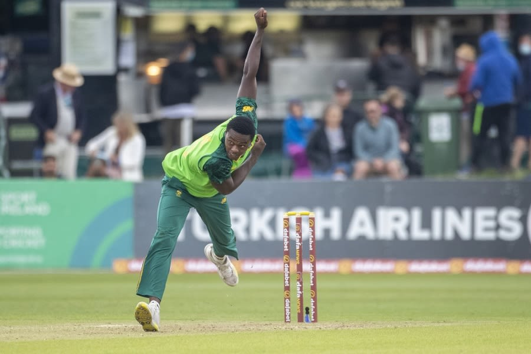

Only 40.2 overs were possible on a stop-start day in Malahide
Ireland 195 for 4 in 40.2 overs (Balbirnie 65, Porterfield 63, Rabada 2-43)
vs
South Africa
An 87-run second-wicket stand between William Porterfield and Andy Balbirnie
anchored Ireland and put them in a solid position before persistent rain
washed out the first ODI in Malahide.
Rain delayed the start of the match by 45 minutes, and there was another
75-minute pause after the 35th over of Ireland's innings. The match was reduced
to 43 overs a side at that point, but there were only a further 32 balls played,
as rain returned and continued past the 5.30pm cut-off for a 20-overs DLS-adjusted
chase.
Under heavy cloud, Temba Bavuma opted to bowl first in the hope that conditions
would aid his attack in running through their hosts but despite significant seam
movement and some turn, wickets were hard to come by. Ireland had plenty in hand
but their scoring rate remained sedate until they returned following the first
rain break. They scored 50 runs in 32 balls thereafter before rain arrived once
again.
Porterfied, who was an injury doubt after hurting a finger in the lead-up to
the match, scored his first fifty since May 2019 while Balbirnie brought up his
second half-century in three innings. The pair were steady against a three-seam,
two-spin South African outfit, who were economical without being overly
aggressive.
South Africa's new-ball pair, Kagiso Rabada and Lungi Ngidi, asked questions
of the Ireland openers, beat them several times and induced edges in the first
10 overs. They would have been disappointed not to have any wickets to show for
that as Ireland worked their way to 28 without loss.
Ireland's first boundary came off Porterfield's outside edge, when he was
squared up by a short-of-a-length Rabada delivery and the chance eluded Aiden
Markram at second slip. His second boundary was more convincing. Porterfield
flicked an attempted Rabada yorker through square leg. Paul Stirling took a
little longer to settle in after an outside-edge off Rabada and an inside-edge
off Ngidi. His first confident stroke came off the 20th ball he faced, when he
pulled Ngidi over short midwicket.
Andile Phehlukwayo, who did not feature in any of the T20s in the Caribbean,
was introduced in the 11th over and was the only South African to have success
until the 31st over. He had Stirling caught at extra-cover, top-edging a pull
to end an innings that never really got going.

Kagiso Rabada picked up a pair of wickets in the brief period of play
between rain interruptions Getty Images
Keshav Maharaj was brought into the attack before Tabraiz Shamsi and Porterfield
appeared to have identified him as the bowler to target. He reverse-swept Maharaj
's second ball for four and tried to smash the final ball of the over down the
ground but sliced it short of Rabada at short third. Balbirnie brought up
Ireland's fifty with a drive through the covers but could have been dismissed
five overs later. He was on 15 when he tried to cut a Maharaj delivery that was
not short or wide enough and top-edged to Markram at slip. Markram tried to take
the chest-high catch reverse-cupped and the ball spilled out of his hands.
Shamsi was brought on in the 21st over and started with a full toss that
Porterfield swatted through mid-wicket. He went on to bring fifty with a heave
over backward square leg off the 69th ball he faced and with almost half the
innings left to bat, may have been eyeing a 12th century but fell 37 short. Shamsi
was convinced Porterfield gloved a reverse-sweep that ballooned up behind the
wicket-keeper and was caught by Markram, running from slip, and South Africa
reviewed. Replays confirmed contact between the ball and the glove.
South Africa hoped they had another
when Balbirnie, on 48, attempted a
sweep
off Maharaj that cannoned off
the pad to him in the chin. Maharaj
convinced
Bavuma to review. Replays
showed the ball had brushed the top
edge before the
ball hit the pad.
Balbirnie went on to bring up his
second fifty in three ODI
innings when
he turned Ngidi round the corner for two.
At the end of that over, the rain returned and reduced the match to 43
overs a side. Ireland had eight overs left to bat and their intention to accelerate
was clear. Balbirnie drilled Shamsi through the covers and steered a Phehlukwayo
slower ball through third man before chipping Rabada to midwicket, while Harry
Tector hit the first six of the innings when he dispatched Rabada over deep
midwicket but was caught behind two balls later.
Pinch-hitter Mark Adair cleared the rope twice more, first with a cheeky bit
of improvisation when he opened the face of the bat to ramp Ngidi over point
and then sent a Rabada full toss out of the ground. The drizzle returned after
25 minutes with Ireland still due to face 16 balls, and that, eventually, was
that.